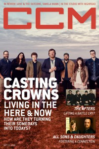

CCM Digital
15 Sep 2016
| Cover |
|---|
|  |
 Online Exclusively Online Exclusively |
| Writers in this Issue |
| Andy Argyrakis Matt Conner Caroline Lusk Kevin Sparkman Jen Rose Yokel |
Casting Crowns
Cover Feature:- "The Next Best Thing" by Caroline Lusk
- "After The Storm" by Caroline Lusk
- "A History of Poets and Saints" by Jen Rose Yokel
- The Afters - Live On Forever by Andy Argyrakis
- Love and the Outcome - These Are The Days by Andy Argyrakis
- Tamela Mann - One Way by Andy Argyrakis
- Phillips, Craig, and Dean - Hymns & Psalms by Matt Conner
- Joe Frey - Hold Fast by Kevin Sparkman
- Tyrus Morgan - When We Love by Kevin Sparkman
- Katy Kinard - God Of Fireflies by Kevin Sparkman
© 2011 CMnexus. Last updated August 2025. Contact: editor -AT- cmnexus -DØT- org